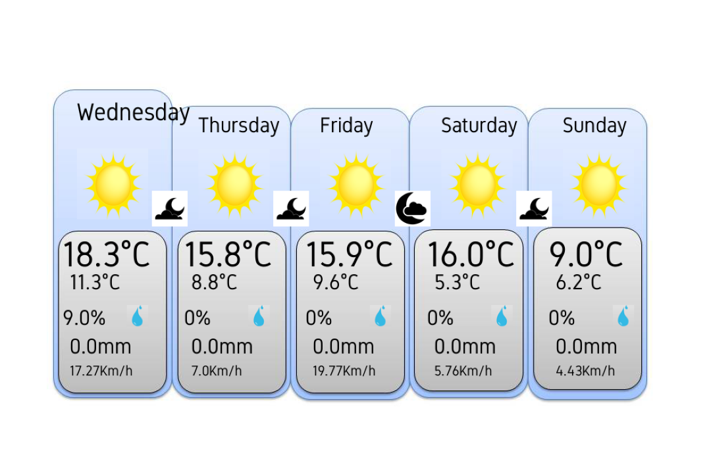

Code
import requests
from datetime import datetime , timedelta
import json
from statistics import mean
from PIL import Image, ImageDraw, ImageFont, ImageColor
import matplotlib.pyplot as plt
import numpy as np
def dataclean(dataliste):
for i in range(len(dataliste)):
if(dataliste[i]==None):
dataliste[i]=dataliste[i-1]
return dataliste
presentday=datetime.today()
start_date=presentday.strftime("%Y-%m-%d")
end_date = presentday + timedelta(4)
end_date=end_date.strftime("%Y-%m-%d")
j=[]
nj=[]
j.append(presentday)
nj.append(j[0].strftime("%A"))
for i in range(4):
j.append(presentday + timedelta(i+1))
nj.append(j[i+1].strftime("%A"))
print(nj)
n_start_date=presentday.strftime("%A")
print(start_date)
print(end_date)
url="https://api.open-meteo.com/v1/meteofrance?latitude=43.61&longitude=3.87&hourly=cloud_cover&hourly=relativehumidity_2m&hourly=precipitation&hourly=temperature_2m&hourly=windspeed_10m&start_date="+start_date+"&end_date="+end_date
response=requests.get(url).content.decode('utf-8')
data = json.loads(response)
temperatureliste=data["hourly"]["temperature_2m"]
windsliste=data["hourly"]["windspeed_10m"]
precipitationliste=data["hourly"]["precipitation"]
relativehumidity=data["hourly"]["temperature_2m"]
cloud_cover=data["hourly"]["cloud_cover"]
temperatureliste=dataclean(temperatureliste)
windsliste=dataclean(windsliste)
precipitationliste=dataclean(precipitationliste)
relativehumidity=dataclean(relativehumidity)
cloud_cover=dataclean(cloud_cover)
maxtemp=[0,0,0,0,0]
mintemp=[0,0,0,0,0]
winds=[0,0,0,0,0]
precipitation=[0,0,0,0,0]
maxhumi=[0,0,0,0,0]
cloudj=[0,0,0,0,0]
for i in range(len(maxtemp)):
maxtemp[i]=max(temperatureliste[24*i:24*(i+1)-1])
mintemp[i]=min(temperatureliste[24*i:24*(i+1)-1])
winds[i]=mean(windsliste[24*i:24*(i+1)-1])
precipitation[i]=sum(precipitationliste[24*i +6:24*(i+1)-1 -6])
maxhumi[0]=max(relativehumidity[24*i:24*(i+1)-1])
cloudj[0]=mean(cloud_cover[24*i +6:24*(i+1)-1 -6])
print(mintemp)
print(maxtemp)
print(winds)
print(precipitation)
print(maxhumi)
precipitationn=[0,0,0,0]
cloudn=[0,0,0,0]
for i in range(len(cloudn)):
cloudn[i]=mean(cloud_cover[18+24*i:18+12+24*i])
precipitationn[i]=sum(precipitationliste[18+24*i:18+12+24*i])
C=70
L=310
img = Image.open("meteoback.jpg")
img_cloud=Image.open("cloud_p.jpg")
img_cloud2=Image.open("cloud2.jpg")
img_cloud3=Image.open("cloud3.jpg")
img_sun=Image.open("sun.jpg")
img_hum=Image.open("hum.jpg")
img_pres_nuit=Image.open("pluit_nuit.jpg")
img_croissant=Image.open("croissant.jpg")
img_cr_nua=Image.open("cr_nua.jpg")
img_nua_nuit=Image.open("nua_nuit.jpg")
draw = ImageDraw.Draw(img)
font = ImageFont.truetype("Gidole-Regular.ttf", size=50)
font1 = ImageFont.truetype("Gidole-Regular.ttf", size=30)
font2 = ImageFont.truetype("Gidole-Regular.ttf", size=20)
font3 = ImageFont.truetype("Gidole-Regular.ttf", size=34)
draw.text((C+20, 120), nj[0],font=font3, fill='black')
for i in range(len(nj)-1):
draw.text((C+20+170*(i+1), 140), nj[i+1],font=font1, fill='black')
for i in range(len(maxtemp)):
draw.text((C+170*i, L), str(round(maxtemp[i],2))+"°C",font=font, fill='black')
draw.text((C+10+170*i, L+50), str(round(mintemp[i],2))+"°C",font=font1, fill='black')
draw.text((C+170*i, L+100), str(round(maxhumi[i],2))+"%",font=font1, fill='black')
draw.text((C+10+170*i, L+140), str(round(precipitation[i], 2))+"mm",font=font1, fill='black')
draw.text((C+10+170*i, L+180), str(round(winds[i], 2))+"Km/h",font=font2, fill='black')
img.paste(img_hum.resize((30, 30)),(C+90+170*i, L+100),)
if(precipitation[i]>2):
img.paste(img_cloud.resize((100, 100)),(C+20+170*i, 190),)
elif (25>cloudj[i]):
img.paste(img_sun.resize((100, 100)),(C+20+170*i, 190),)
elif (60>cloudj[i]):
img.paste(img_cloud2.resize((100, 100)),(C+20+170*i, 190),)
else:
img.paste(img_cloud3.resize((100, 100)),(C+20+170*i, 190),)
for i in range(len(cloudn)):
if(precipitationn[i]>2):
img.paste(img_pres_nuit.resize((50, 50)),(C+125+170*i, 250),)
elif (25>cloudn[i]):
img.paste(img_croissant.resize((50, 50)),(C+125+170*i, 250),)
elif (60>cloudn[i]):
img.paste(img_cr_nua.resize((50, 50)),(C+125+170*i, 250),)
else:
img.paste(img_nua_nuit.resize((50, 50)),(C+125+170*i, 250),)
plt.axis("off")
plt.imshow(img)['Wednesday', 'Thursday', 'Friday', 'Saturday', 'Sunday']
2023-11-15
2023-11-19
[11.3, 8.8, 9.6, 5.3, 6.2]
[18.3, 15.8, 15.9, 16.0, 9.0]
[17.27391304347826, 7.0, 19.769565217391303, 5.756521739130434, 4.426086956521739]
[0.0, 0.0, 0.0, 0.0, 0.0]
[9.0, 0, 0, 0, 0]<matplotlib.image.AxesImage at 0x21218668850>